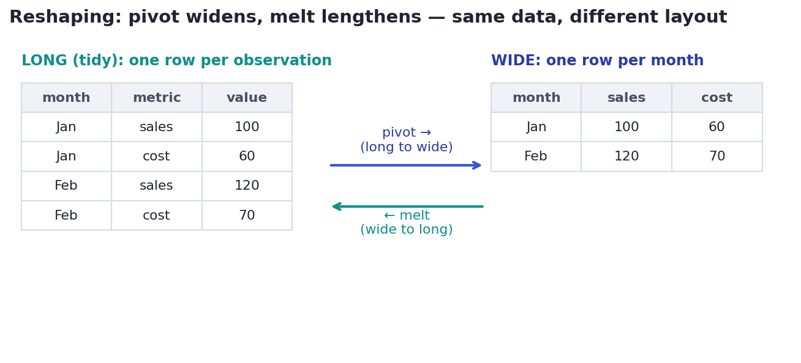

Reshaping & Aggregating
groupby, pivot, melt, and joins — turning rows into answers.
Raw rows rarely answer a question directly. 'What's revenue by category?' 'How do months compare?' 'What did each customer spend, with their region attached?' Answering these means reshaping and aggregating — turning a pile of rows into a summary that speaks. Three verbs do almost all of it: groupby, pivot/melt, and merge. Master them and you can answer most business questions in a line or two.
Concept · the workhorsegroupby: split, apply, combine
groupby is the single most used operation in data analysis. It follows one pattern: split the rows into groups by some key, apply a function to each group, and combine the results into one row per group. 'Average order value by category' is exactly this.

sum to each group, and combine into one tidy row per category. Swap sum for mean, count, max, or several at once with .agg([...]).Concept · changing the layoutReshaping: pivot and melt
The same data can be laid out two ways. Long (or 'tidy') form has one row per observation — great for storage and most analysis. Wide form spreads a variable across columns — great for reading and for some charts. pivot goes long→wide; melt goes wide→long. You'll constantly switch between them.

Concept · combining sourcesJoining tables: merge
Real answers usually live across multiple tables — orders here, customer details there, product margins somewhere else. merge (a database join) stitches two tables together on a shared key column. The how argument decides which rows survive when keys don't all match:

inner keeps only matching keys; left keeps all left rows (your main table) and attaches matches; right mirrors it; outer keeps everything. left is the everyday default — 'keep all my orders, add customer info where I have it.'Check your row count after a merge. If the key isn't unique in the table you join to, rows can multiply (a one-to-many join), silently inflating sums and averages. A quick len(df) before and after — or validate="many_to_one" — catches this common, costly bug.
Worked exampleReshape and join in code
Aggregate orders by category, then merge in each category's profit margin and compute profit — a miniature of real analytical work.
import pandas as pd
orders = pd.DataFrame({
"category": ["Electronics", "Apparel", "Electronics", "Beauty", "Apparel"],
"amount": [180, 45, 220, 30, 95],
})
# 1) groupby: several aggregations at once.
summary = orders.groupby("category")["amount"].agg(["sum", "mean", "count"])
print(summary.to_string())
# 2) merge: attach each category's margin (a left join on 'category'), then compute profit.
margins = pd.DataFrame({"category": ["Electronics", "Apparel", "Beauty"],
"margin": [0.25, 0.50, 0.60]})
joined = orders.merge(margins, on="category", how="left")
joined["profit"] = joined["amount"] * joined["margin"]
print("\n" + joined.to_string(index=False))
print(f"\ntotal profit: ${joined['profit'].sum():.2f}") sum mean count
category
Apparel 140 70.0 2
Beauty 30 30.0 1
Electronics 400 200.0 2
category amount margin profit
Electronics 180 0.25 45.0
Apparel 45 0.50 22.5
Electronics 220 0.25 55.0
Beauty 30 0.60 18.0
Apparel 95 0.50 47.5
total profit: $188.00That's the daily rhythm of analysis: group to summarize, merge to enrich, compute the metric that answers the question. Everything you did by hand in pure Python back in 2.1 is now a few declarative lines — and it scales to millions of rows.
★ Key points to remember
- groupby = split by a key, apply a function, combine into one row per group; use
.agg([...])for several stats at once. - Long/tidy = one row per observation; wide spreads a variable across columns. pivot widens, melt lengthens.
- merge joins tables on a key;
how=picks inner / left / right / outer.leftis the common default. - Check row counts around merges — a non-unique key causes one-to-many row explosions that corrupt totals.
- These three verbs (group, reshape, join) answer most business questions in a line or two.
revenue for each region. Which call does it?merge your 1,000-row orders table with a products table, and suddenly have 1,400 rows. What most likely happened?month, metric, value (long form) and you want one column per metric, one row per month (wide form). Which operation?◆ Practice▸
customer_id from a DataFrame orders.Show solution & reasoning
orders.groupby("customer_id")["amount"].agg(["count", "sum"]). Group by customer, then apply both count (number of orders) and sum (total spent), producing one row per customer with two columns. (Use .rename(columns=...) if you want friendlier names.)
region, which lives in a separate customers table keyed by customer_id. Write the merge, and say which how to use and why.Show solution & reasoning
orders.merge(customers[["customer_id", "region"]], on="customer_id", how="left"). Use left so you keep every order even if a customer record is missing — you don't want to silently drop orders just because their customer row is absent. After merging, check the row count is unchanged (the customer key should be unique).
◎ Deep dive: tidy data, agg vs transform vs filter, and time resampling▸
Tidy data. Hadley Wickham's 'tidy data' principle: each variable is a column, each observation is a row, each type of observational unit is a table. Long/tidy form is the ideal storage and analysis layout because group, filter, and plot operations all assume it. Reshape to wide only at the end, for human eyes or a specific chart. Keeping data tidy upstream prevents a surprising amount of pain.
agg vs transform vs filter. groupby(...).agg(...) returns one row per group (a summary). groupby(...).transform(...) returns a result aligned to the original rows — perfect for adding a 'group average' column next to each row (e.g., each order's amount minus its category's mean). groupby(...).filter(...) keeps or drops whole groups by a condition (e.g., only categories with more than 100 orders). Picking the right one avoids clumsy merges back onto the data.
Time resampling. With a datetime index, df.resample("M").sum() is a time-aware groupby — it buckets rows into months (or days, weeks, quarters) and aggregates. It's how you turn raw event logs into the monthly-revenue chart from the capstone, and it handles calendar quirks (different month lengths) for you.
Live Pandas/SQL exercises lean on these verbs: 'total revenue per region,' 'top 3 products per category,' 'join these tables.' Narrate the split-apply-combine pattern for groupby, state which join how you'd use and why (usually left, to preserve your main table), and always mention checking row counts after a merge. The SQL parallels (GROUP BY, JOIN) come up in the next lesson.